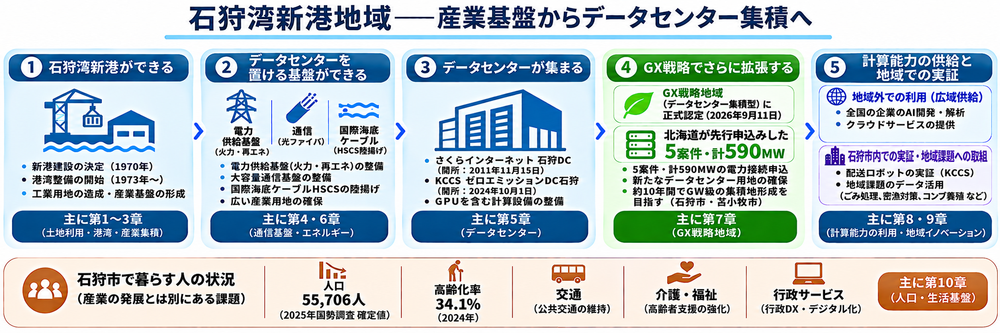

Home / Research / Data Center & Digital Infrastructure / GX戦略地域「データセンター集積型」 / 地域別調査 / 北海道・石狩市
北海道・石狩市
第1.0版
総目次
第1章 石狩の土地は、どのように利用されてきたのか
第2章 石狩湾新港は、なぜこの場所につくられたのか
第3章 石狩湾新港地域は、どのように企業を集めてきたのか
第4章 データセンターより先に、石狩へどのような通信網が整備されたのか
第5章 石狩のデータセンターは、どのような設備と計算能力を備えているのか
第6章 石狩の再生可能エネルギーと電力供給は、どこまで整備されているのか
第7章 GX戦略地域で、石狩のDC集積はどこまで拡大するのか
第8章 石狩のDCの計算能力は、実際にどのように使われているのか
第9章 石狩市は、地域課題とデータセンターをどう結び付けているのか
第10章 人口減少と高齢化のなかで、石狩の産業・生活基盤はどう変化しているのか
